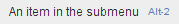

A menu provides a space-saving way to let the user choose one of several options. Other components with which the user can make a one-of-many choice include combo boxes, lists, radio buttons, spinners, and tool bars. If any of your menu items performs an action that is duplicated by another menu item or by a tool-bar button, then in addition to this section you should read How to Use Actions.Menus are unique in that, by convention, they aren't placed with the other components in the UI. Instead, a menu usually appears either in a menu bar or as a popup menu. A menu bar contains one or more menus and has a customary, platform-dependent location — usually along the top of a window. A popup menu is a menu that is invisible until the user makes a platform-specific mouse action, such as pressing the right mouse button, over a popup-enabled component. The popup menu then appears under the cursor.
The following figure shows many menu-related components: a menu bar, menus, menu items, radio button menu items, check box menu items, and separators. As you can see, a menu item can have either an image or text, or both. You can also specify other properties, such as font and color.
The rest of this section teaches you about the menu components and tells you how to use various menu features:

The Menu Component Hierarchy
Here is a picture of the inheritance hierarchy for the menu-related classes:As the figure shows, menu items (including menus) are simply buttons. You might be wondering how a menu, if it's only a button, shows its menu items. The answer is that when a menu is activated, it automatically brings up a popup menu that displays the menu items.

Creating Menus
The following code creates the menus shown near the beginning of this menu section. The bold lines of code create and connect the menu objects; the other code sets up or customizes the menu objects. You can find the entire program inBecause this code has no event handling, the menus do nothing useful except to look as they should. If you run the example, you'll notice that despite the lack of custom event handling, menus and submenus appear when they should, and the check boxes and radio buttons respond appropriately when the user chooses them.MenuLookDemo.java. Other required files are listed in the example index.
Try this:
- Click the Launch button to run the MenuLook Demo using Java™ Web Start (download JDK 6). Alternatively, to compile and run the example yourself, consult the example index.

//Where the GUI is created:
JMenuBar menuBar;
JMenu menu, submenu;
JMenuItem menuItem;
JRadioButtonMenuItem rbMenuItem;
JCheckBoxMenuItem cbMenuItem;
//Create the menu bar.
menuBar = new JMenuBar();
//Build the first menu.
menu = new JMenu("A Menu");
menu.setMnemonic(KeyEvent.VK_A);
menu.getAccessibleContext().setAccessibleDescription(
"The only menu in this program that has menu items");
menuBar.add(menu);
//a group of JMenuItems
menuItem = new JMenuItem("A text-only menu item",
KeyEvent.VK_T);
menuItem.setAccelerator(KeyStroke.getKeyStroke(
KeyEvent.VK_1, ActionEvent.ALT_MASK));
menuItem.getAccessibleContext().setAccessibleDescription(
"This doesn't really do anything");
menu.add(menuItem);
menuItem = new JMenuItem("Both text and icon",
new ImageIcon("images/middle.gif"));
menuItem.setMnemonic(KeyEvent.VK_B);
menu.add(menuItem);
menuItem = new JMenuItem(new ImageIcon("images/middle.gif"));
menuItem.setMnemonic(KeyEvent.VK_D);
menu.add(menuItem);
//a group of radio button menu items
menu.addSeparator();
ButtonGroup group = new ButtonGroup();
rbMenuItem = new JRadioButtonMenuItem("A radio button menu item");
rbMenuItem.setSelected(true);
rbMenuItem.setMnemonic(KeyEvent.VK_R);
group.add(rbMenuItem);
menu.add(rbMenuItem);
rbMenuItem = new JRadioButtonMenuItem("Another one");
rbMenuItem.setMnemonic(KeyEvent.VK_O);
group.add(rbMenuItem);
menu.add(rbMenuItem);
//a group of check box menu items
menu.addSeparator();
cbMenuItem = new JCheckBoxMenuItem("A check box menu item");
cbMenuItem.setMnemonic(KeyEvent.VK_C);
menu.add(cbMenuItem);
cbMenuItem = new JCheckBoxMenuItem("Another one");
cbMenuItem.setMnemonic(KeyEvent.VK_H);
menu.add(cbMenuItem);
//a submenu
menu.addSeparator();
submenu = new JMenu("A submenu");
submenu.setMnemonic(KeyEvent.VK_S);
menuItem = new JMenuItem("An item in the submenu");
menuItem.setAccelerator(KeyStroke.getKeyStroke(
KeyEvent.VK_2, ActionEvent.ALT_MASK));
submenu.add(menuItem);
menuItem = new JMenuItem("Another item");
submenu.add(menuItem);
menu.add(submenu);
//Build second menu in the menu bar.
menu = new JMenu("Another Menu");
menu.setMnemonic(KeyEvent.VK_N);
menu.getAccessibleContext().setAccessibleDescription(
"This menu does nothing");
menuBar.add(menu);
...
frame.setJMenuBar(theJMenuBar);
As the code shows,
to set the menu bar for a JFrame,
you use the setJMenuBar method.
To add a JMenu to a JMenuBar,
you use the add(JMenu) method.
To add menu items and submenus to a JMenu,
you use the add(JMenuItem) method.
Note: Menu items, like other components, can be in at most one container. If you try to add a menu item to a second menu, the menu item will be removed from the first menu before being added to the second. For a way of implementing multiple components that do the same thing, see How to Use Actions.
Other methods
in the preceding code include setAccelerator and
setMnemonic,
which are discussed a little later in
Enabling Keyboard Operation.
The setAccessibleDescription method
is discussed in
How to Support Assistive Technologies.
Handling Events from Menu Items
To detect when the user chooses aJMenuItem, you can listen for action events (just as you would for aJButton). To detect when the user chooses aJRadioButtonMenuItem, you can listen for either action events or item events, as described in How to Use Radio Buttons. ForJCheckBoxMenuItems, you generally listen for item events, as described in How to Use Check Boxes.
Try this:
- Click the Launch button to run the Menu Demo using Java™ Web Start (download JDK 6). Alternatively, to compile and run the example yourself, consult the example index.
Here is the code that implements the event handling:
public class MenuDemo ... implements ActionListener,
ItemListener {
...
public MenuDemo() {
//...for each JMenuItem instance:
menuItem.addActionListener(this);
...
//for each JRadioButtonMenuItem:
rbMenuItem.addActionListener(this);
...
//for each JCheckBoxMenuItem:
cbMenuItem.addItemListener(this);
...
}
public void actionPerformed(ActionEvent e) {
//...Get information from the action event...
//...Display it in the text area...
}
public void itemStateChanged(ItemEvent e) {
//...Get information from the item event...
//...Display it in the text area...
}
Enabling Keyboard Operation
Menus support two kinds of keyboard alternatives: mnemonics and accelerators. Mnemonics offer a way to use the keyboard to navigate the menu hierarchy, increasing the accessibility of programs. Accelerators, on the other hand, offer keyboard shortcuts to bypass navigating the menu hierarchy. Mnemonics are for all users; accelerators are for power users.A mnemonic is a key that makes an already visible menu item be chosen. For example, in
MenuDemothe first menu has the mnemonic A, and its second menu item has the mnemonic B. This means that, when you runMenuDemowith the Java look and feel, pressing the Alt and A keys makes the first menu appear. While the first menu is visible, pressing the B key (with or without Alt) makes the second menu item be chosen. A menu item generally displays its mnemonic by underlining the first occurrence of the mnemonic character in the menu item's text, as the following snapshot shows.An accelerator is a key combination that causes a menu item to be chosen, whether or not it's visible. For example, pressing the Alt and 2 keys in
MenuDemomakes the first item in the first menu's submenu be chosen, without bringing up any menus. Only leaf menu items — menus that don't bring up other menus — can have accelerators. The following snapshot shows how the Java look and feel displays a menu item that has an accelerator. You can specify a mnemonic either when constructing the menu item or with the
setMnemonicmethod. To specify an accelerator, use thesetAcceleratormethod. Here are examples of setting mnemonics and accelerators:As you can see, you set a mnemonic by specifying the//Setting the mnemonic when constructing a menu item: menuItem = new JMenuItem("A text-only menu item", KeyEvent.VK_T); //Setting the mnemonic after creation time: menuItem.setMnemonic(KeyEvent.VK_T); //Setting the accelerator: menuItem.setAccelerator(KeyStroke.getKeyStroke( KeyEvent.VK_T, ActionEvent.ALT_MASK));KeyEventconstant corresponding to the key the user should press. To specify an accelerator you must use aKeyStrokeobject, which combines a key (specified by aKeyEventconstant) and a modifier-key mask (specified by anActionEventconstant).
Note: Because popup menus, unlike regular menus, aren't always contained by a component, accelerators in popup menu items don't work unless the popup menu is visible.
Bringing Up a Popup Menu
To bring up a popup menu (JPopupMenu), you must register a mouse listener on each component that the popup menu should be associated with. The mouse listener must detect user requests that the popup menu be brought up.The exact gesture that should bring up a popup menu varies by look and feel. In Microsoft Windows, the user by convention brings up a popup menu by releasing the right mouse button while the cursor is over a component that is popup-enabled. In the Java look and feel, the customary trigger is either pressing the right mouse button (for a popup that goes away when the button is released) or clicking it (for a popup that stays up).
Try this:
- Click the Launch button to run the PopupMenu Demo using Java™ Web Start (download JDK 6). Alternatively, to compile and run the example yourself, consult the example index.
//...where instance variables are declared:
JPopupMenu popup;
//...where the GUI is constructed:
//Create the popup menu.
popup = new JPopupMenu();
menuItem = new JMenuItem("A popup menu item");
menuItem.addActionListener(this);
popup.add(menuItem);
menuItem = new JMenuItem("Another popup menu item");
menuItem.addActionListener(this);
popup.add(menuItem);
//Add listener to components that can bring up popup menus.
MouseListener popupListener = new PopupListener();
output.addMouseListener(popupListener);
menuBar.addMouseListener(popupListener);
...
class PopupListener extends MouseAdapter {
public void mousePressed(MouseEvent e) {
maybeShowPopup(e);
}
public void mouseReleased(MouseEvent e) {
maybeShowPopup(e);
}
private void maybeShowPopup(MouseEvent e) {
if (e.isPopupTrigger()) {
popup.show(e.getComponent(),
e.getX(), e.getY());
}
}
}
Popup menus have a few interesting implementation details. One is that every menu has an associated popup menu. When the menu is activated, it uses its associated popup menu to show its menu items.
Another detail is that a popup menu itself
uses another component
to implement the window containing the menu items.
Depending on the circumstances under which
the popup menu is displayed,
the popup menu might implement its "window" using
a lightweight component (such as a JPanel),
a "mediumweight" component (such as a
Panel),
or a heavyweight window (something that inherits from
Window).
Lightweight popup windows are more efficient than
heavyweight windows, but they don't work well
if you have any heavyweight components
inside your GUI.
Specifically, when the lightweight popup's display area
intersects the heavyweight component's display area,
the heavyweight component is drawn on top.
This is one of the reasons we recommend against
mixing heavyweight and lightweight components.
If you absolutely need to use a heavyweight component in your GUI,
then you can invoke
JPopupMenu.setLightWeightPopupEnabled(false)
to disable lightweight popup windows.
For details, see
Mixing
Heavy and Light Components, an article in
The Swing Connection.
Customizing Menu Layout
Because menus are made up of ordinary Swing components,
you can easily customize them.
For example,
you can add any lightweight component
to a JMenu or JMenuBar.
And because JMenuBar uses
BoxLayout,
you can customize a menu bar's layout
just by adding invisible components to it.
Here is an example
of adding a glue component to a menu bar,
so that
the last menu is at the right edge of the menu bar:
//...create and add some menus... menuBar.add(Box.createHorizontalGlue()); //...create the rightmost menu... menuBar.add(rightMenu);
Try this:
- Click the Launch button to run the MenuGlue Demo using Java™ Web Start (download JDK 6). Alternatively, to compile and run the example yourself, consult the example index.
Here's the modified menu layout that MenuGlueDemo displays:

Another way of changing the look of menus
is to change the layout managers used to control them.
For example, you can change a menu bar's layout manager
from the default left-to-right BoxLayout
to something such as GridLayout.
Try this:
- Click the Launch button to run the MenuLayout Demo using Java™ Web Start (download JDK 6). Alternatively, to compile and run the example yourself, consult the example index.
Here's a picture of the menu layout that MenuLayoutDemo creates:
The Menu API
The following tables list the commonly used menu constructors and methods. The API for using menus falls into these categories:
- Creating and Setting Up Menu Bars
- Creating and Populating Menus
- Creating, Populating, and Controlling Popup Menus
- Implementing Menu Items
Creating and Setting Up Menu Bars Constructor or Method Purpose JMenuBar() Creates a menu bar. JMenu add(JMenu) Creates a menu bar. void setJMenuBar(JMenuBar)
JMenuBar getJMenuBar()
(inJApplet,JDialog,JFrame,JInternalFrame,JRootPane)Sets or gets the menu bar of an applet, dialog, frame, internal frame, or root pane.
Creating and Populating Menus Constructor or Method Purpose JMenu()
JMenu(String)
JMenu(Action)Creates a menu. The string specifies the text to display for the menu. The Actionspecifies the text and other properties of the menu (see How to Use Actions).JMenuItem add(JMenuItem)
JMenuItem add(String)Adds a menu item to the current end of the menu. If the argument is a string, then the menu automatically creates a JMenuItemobject that displays the specified text.Version Note: Before 1.3, the only way to associate an
Actionwith a menu item was to use menu'sadd(Action)method to create the menu item and add it to the menu. As of 1.3, that method is no longer recommended. You can instead associate a menu item with anActionusing thesetActionmethod.void addSeparator() Adds a separator to the current end of the menu. JMenuItem insert(JMenuItem, int)
void insert(String, int)
void insertSeparator(int)Inserts a menu item or separator into the menu at the specified position. The first menu item is at position 0, the second at position 1, and so on. The JMenuItemandStringarguments are treated the same as in the correspondingaddmethods.void remove(JMenuItem)
void remove(int)
void removeAll()Removes the specified item(s) from the menu. If the argument is an integer, then it specifies the position of the menu item to be removed.
Creating, Populating, and Controlling Popup Menus Constructor or Method Purpose JPopupMenu()
JPopupMenu(String)Creates a popup menu. The optional string argument specifies the title that a look and feel might display as part of the popup window. JMenuItem add(JMenuItem)
JMenuItem add(String)Adds a menu item to the current end of the popup menu. If the argument is a string, then the menu automatically creates a JMenuItemobject that displays the specified text.Version Note: Before 1.3, the only way to associate an
Actionwith an item in a popup menu was to use the popup menu'sadd(Action)method to create the menu item and add it to the popup menu. As of 1.3, that method is no longer recommended. You can instead associate a menu item with anActionusing thesetActionmethod.void addSeparator() Adds a separator to the current end of the popup menu. void insert(Component, int) Inserts a menu item into the menu at the specified position. The first menu item is at position 0, the second at position 1, and so on. The Componentargument specifies the menu item to add.void remove(int)
void removeAll()Removes the specified item(s) from the menu. If the argument is an integer, then it specifies the position of the menu item to be removed. static void setLightWeightPopupEnabled(boolean) By default, Swing implements a menu's window using a lightweight component. This can cause problems if you use any heavyweight components in your Swing program, as described in Bringing Up a Popup Menu. (This is one of several reasons to avoid using heavyweight components.) As a workaround, invoke JPopupMenu.setLightWeightPopupEnabled(false).void show(Component, int, int) Display the popup menu at the specified x,y position (specified in that order by the integer arguments) in the coordinate system of the specified component.
Implementing Menu Items Constructor or Method Purpose JMenuItem()
JMenuItem(String)
JMenuItem(Icon)
JMenuItem(String, Icon)
JMenuItem(String, int)
JMenuItem(Action)Creates an ordinary menu item. The icon argument, if present, specifies the icon that the menu item should display. Similarly, the string argument specifies the text that the menu item should display. The integer argument specifies the keyboard mnemonic to use. You can specify any of the relevant VK constants defined in the KeyEvent class. For example, to specify the A key, use KeyEvent.VK_A.The constructor with the
Actionparameter, which was introduced in 1.3, sets the menu item'sAction, causing the menu item's properties to be initialized from theAction. See How to Use Actions for details.JCheckBoxMenuItem()
JCheckBoxMenuItem(String)
JCheckBoxMenuItem(Icon)
JCheckBoxMenuItem(String, Icon)
JCheckBoxMenuItem(String, boolean)
JCheckBoxMenuItem(String, Icon, boolean)Creates a menu item that looks and acts like a check box. The string argument, if any, specifies the text that the menu item should display. If you specify truefor the boolean argument, then the menu item is initially selected (checked). Otherwise, the menu item is initially unselected.JRadioButtonMenuItem()
JRadioButtonMenuItem(String)
JRadioButtonMenuItem(Icon)
JRadioButtonMenuItem(String, Icon)
JRadioButtonMenuItem(String, boolean)
JRadioButtonMenuItem(Icon, boolean)
JRadioButtonMenuItem(String, Icon, boolean)Creates a menu item that looks and acts like a radio button. The string argument, if any, specifies the text that the menu item should display. If you specify truefor the boolean argument, then the menu item is initially selected. Otherwise, the menu item is initially unselected.void setState(boolean)
boolean getState()
(inJCheckBoxMenuItem)Set or get the selection state of a check box menu item. void setEnabled(boolean) If the argument is true, enable the menu item. Otherwise, disable the menu item. void setMnemonic(int) Set the mnemonic that enables keyboard navigation to the menu or menu item. Use one of the VK constants defined in the KeyEventclass.void setAccelerator(KeyStroke) Set the accelerator that activates the menu item. void setActionCommand(String) Set the name of the action performed by the menu item. void addActionListener(ActionListener)
void addItemListener(ItemListener)Add an event listener to the menu item. See Handling Events from Menu Items for details. void setAction(Action) Set the Actionassociated with the menu item. See How to Use Actions for details.Many of the preceding methods are inherited from AbstractButton. See The Button API for information about other useful methods thatAbstractButtonprovides.
Examples that Use Menus
Menus are used in a few of our examples.
Example Where Described Notes MenuLookDemoThis section (Creating Menus) A simple example that creates all kinds of menus except popup menus, but doesn't handle events from the menu items. MenuDemoThis section (Handling Events from Menu Items) Adds event handling to MenuLookDemo.PopupMenuDemoThis section (Bringing Up a Popup Menu) Adds popup menus to MenuDemo.MenuGlueDemoThis section (Customizing Menu Layout) Demonstrates affecting menu layout by adding an invisible components to the menu bar. MenuLayoutDemoThis section (Customizing Menu Layout) Implements sideways-opening menus arranged in a vertical menu bar. MenuSelectionManagerDemo— Adds highlight detection to MenuDemo. To see this feature, click a menu and then move the mouse over any menu item or submenu. Once per second, the text area will be updated with information about the currently highlighted menu item, not to be confused with the menu item that the user eventually chooses. This demo uses the default MenuSelectionManager, which tracks the state of the menu hierarchy.ActionDemoHow to Use Actions Uses Actionobjects to implement menu items that duplicate functionality provided by tool bar buttons.Framework— Brings up multiple identical frames, each with a menu in its menu bar. InternalFrameDemoHow to Use Internal Frames Uses a menu item to create windows. DragColorTextFieldDemoIntroduction to Drag and Drop and Data Transfer Sets up menu items for cut/copy/paste. DragPictureDemoIntroduction to Drag and Drop and Data Transfer Sets up menu items for cut/copy/paste with a non-text component.